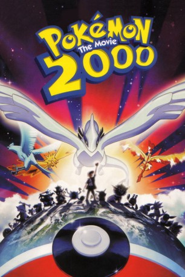

#4100 Pokémon 02 - Die Macht des Einzelnen
Alternativ: Pokemon 02 The Movie 2000 (Englischer Titel)
 
 IMDB-Wertung: 5.9 / 10
IMDB-Wertung: 5.9 / 10  Metascore: 0
Metascore: 0 
Aus dem Jahre 2000 stammende Fortsetzung des Anime-Erfolgs. Im zweiten Teil will der Pokémon-Sammler Lawrence III drei Pokémon-Vögel fangen, um so das Gleichgewicht der Natur zu verändern. Ash muss nun seine Kräfte testen. Doch kann er es mit dem Sammler aufnehmen? Und wird es ihm gelingen die Welt zu retten?
Jahr: 1999
Dauer: 77 Minuten
FSK: 6
Land: Japan Studio: Warner Home VideoTonspuren:
Untertitel: Deutsch,
Auflösung: 1080p (1920x1040) Größe: 4413 MB
Genre: Action, Abenteuer, Fantasy, Animation/Trick, Familie
Regisseur: Michael Haigney, Kunihiko Yuyama
Drehbuch: Rob Hedden
Soundtrack:
Darsteller:
Datei: X:\Kinder Anime\Pokémon\Pokémon 02 - Die Macht des Einzelnen (1999, FSK6, 1920x1040).mkv seit 22.07.2016
Festplatte: Kinder-Filme+Trick
 Es gibt insgesamt 23 Filme in der Gruppe 'Kinder Anime\Pokémon'
Es gibt insgesamt 23 Filme in der Gruppe 'Kinder Anime\Pokémon'